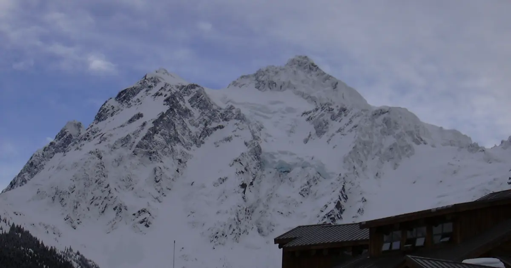

Mt. Baker im Dezember: der schneereichste Günstig-Ticket-Roadtrip in Washington
Wenn Sie im Nordwesten nur einen Dezember-Skitag einplanen, nehmen Sie den Mount Baker Highway. In unserer Schneehistorie von 46 Wintern lagen auf halber Höhe am Mt. Baker am 15. Dezember in 93 % der Fälle mindestens 20 in (50 cm) Schnee, und ein Erwachsenenticket unter der Woche kostet 98,80 $, gekauft am Schalter, am selben Tag.
Die Live-Schneeprognose für Mt Baker in der SnowScope-AppSchneehöhen, Pulverschnee-Alarme und 3D-Karte, gratis.Der letzte Ort ist Glacier, danach wird es weiß
Mt. Baker ist kein Resort-Ort. Man fährt von Bellingham aus nach Osten, tankt in Glacier und fährt hinauf zu einer Talstation auf etwa 3.630 ft (1.106 m). Das kartierte Gebiet ist kompakt: 10 Lifte und etwa 14 mi (23 km) Pisten, die auf rund 5.100 ft (1.556 m) enden. Auf dem Papier kleine Zahlen, aber diese Ecke der North Cascades sammelt Schnee wie kaum ein anderer Ort in den unteren 48 Bundesstaaten.
In einem typischen Winter unserer Historie erreicht dauerhafter Schnee die halbe Höhe Ende Oktober. Zu Beginn des Dezembers herrscht an der Hütte meist schon echter Winter.

Wie ein typischer Dezember aussieht
Am 1. Dezember liegen im mittleren Winter unserer Aufzeichnung 31 in (79 cm) auf halber Höhe, bei etwa 4.370 ft (1.331 m). Bis zum 15. Dezember wächst das auf 28 in (72 cm) an der Talstation, 46 in (116 cm) auf halber Höhe und 69 in (176 cm) an der Bergstation. Am Weihnachtstag liegt die halbe Höhe bei 57 in (145 cm).
Auch Woche für Woche ist das Bild stabil. Der Anteil der Winter mit guter Schneedecke (ein Wochenmittel von 20 in, 50 cm, oder mehr) auf halber Höhe liegt in der ersten Dezemberwoche bei 85 %, in der zweiten bei 91 %, in der dritten bei 98 % und in der Weihnachtswoche bei 100 %.

Das Ticket: altmodisch, und günstiger von Montag bis Donnerstag
Mt. Baker hält es einfach. Erwachsenentickets (16-59 Jahre) kosten 115,42 $ an Spitzentagen, Freitag bis Sonntag und an Feiertagen, und 98,80 $ unter der Woche, Montag bis Donnerstag außerhalb der Feiertage, ohne Steuern. Es gibt keinen Online-Verkauf, keinen Vorverkauf und kein Mehrtagesticket: Gekauft wird nur am Tag selbst.
Damit liegt der Spartipp auf der Hand. Ein Dienstag- oder Mittwochausflug spart die Differenz zwischen beiden Preisen und bringt obendrein einen leereren Parkplatz und eine ruhigere Fahrt den Highway hinauf.
Im Vergleich zu White Pass und Timberline
White Pass, südlich des Mount Rainier, ist der Preis-Herausforderer: Sein Online-Erwachsenenticket startet bei 69 $ unter der Woche und 89 $ an Spitzentagen, steigt aber mit dem Verkaufsstand auf bis zu 99 $ und 119 $. Dort lagen auf halber Höhe an einem typischen 15. Dezember 40 in (102 cm), mit 20 in (50 cm) oder mehr in 87 % der Winter.
Timberline am Mt. Hood hat auf dem Papier eine tiefere Schneedecke auf halber Höhe, 52 in (132 cm) an einem typischen 15. Dezember, erreichte aber nur in 78 % der Winter 20 in (50 cm), und ein Tagesticket für Erwachsene kostet dort 129 $ unter der Woche und 161 $ an Spitzentagen. Für Schneesicherheit pro Dollar Anfang Dezember ist Mt. Baker kaum zu schlagen.
Der ehrliche Teil: schwache Jahre gibt es auch
Ein schwacher Winter, wie man ihn etwa jedes zehnte Jahr bekommt, lässt am 15. Dezember immer noch etwa 25 in (63 cm) auf halber Höhe übrig. Der letzte Winter war einer der dünnen: 16 in (42 cm) auf halber Höhe an diesem Datum.
Auch die jüngeren Winter starten etwas langsamer als die alten. In den ersten 15 Wintern unserer Aufzeichnung (1980-81 bis 1994-95) lag der Medianwert am 15. Dezember bei 52 in (131 cm) auf halber Höhe, und jeder einzelne Winter hatte 20 in oder mehr. In den letzten 15 Wintern (2011-12 bis 2025-26) waren es 41 in (104 cm), mit 87 % über 20 in. Immer noch eine sehr gute Wette, nur kein Blankoscheck mehr.
Tipps für Skifahrer
- Planen Sie einen Ausflug von Montag bis Donnerstag: Das ist das günstigere Ticket und der ruhigere Tag.
- Nehmen Sie Karte oder Bargeld mit und kaufen Sie am Schalter: Tickets gibt es nur am Tag selbst.
- Fahren Sie mit Ketten oder Winterreifen auf dem Mount Baker Highway, und prüfen Sie den Straßenbericht, bevor Sie Glacier verlassen.
- Planen Sie Mitte Dezember oder später: Ab der dritten Woche hatte fast jeder vergangene Winter gute Schneeverhältnisse auf halber Höhe.
- Abseits der Pisten unterwegs? Lesen Sie zuerst den Lawinenlagebericht: Früher, tiefer Schnee kann instabil sein.
Quellen und Nachweise
- Mt. Baker Ski Area, daily lift tickets (official) www.mtbaker.us/tickets-and-passes/daily-lift-tickets/
- White Pass, online day tickets 2026/27 (official) skiwhitepass.com/online-day-ticket-sales
- Timberline Lodge, winter lift tickets 2026/2027 (official) www.timberlinelodge.com/activities/winter/lift-tickets/
- OpenSkiMap (mapped lifts and runs) openskimap.org/
- avalanche.org, US avalanche centers and forecasts avalanche.org/
Zu diesen Zahlen
Schneewerte: SnowScope-Schneehistorie, 46 vergangene Winter (1980-81 bis 2025-26) auf den angegebenen Höhen (Tal, Mitte, Gipfel), eine höhenkorrigierte Rekonstruktion des früheren Schnees für eine Fläche (auf Basis von ERA5-Land; Snow_Hydro 1 km für Marokko), keine Meldungen des Skigebiets. Aktueller Schnee: die SnowScope-Schneekarte. Lifte, Pisten und Höhen: OpenSkiMap-Kartierung. Preise: die unten genannten offiziellen Seiten, gelesen am 13. November 2026; dynamische Preise ändern sich mit Datum und Nachfrage.
Offizielle Lawinenlageberichte: avalanche.org (US national portal)
Diesen Bericht zitieren
Für Forschung, Lehre oder Presse: Zahlen und Grafiken sind unter CC BY 4.0 mit dieser Quellenangabe frei nutzbar.
SnowScope (2026), Mt. Baker im Dezember: der schneereichste Günstig-Ticket-Roadtrip in Washington, https://snowscope.app/blog/de/2026/11/mt-baker-december-ski-trip-cheap-2026.html, abgerufen am 2026-11-14
SnowScope (Atlas Labs). (2026, November 14). Mt. Baker im Dezember: der schneereichste Günstig-Ticket-Roadtrip in Washington. SnowScope snow reports. https://snowscope.app/blog/de/2026/11/mt-baker-december-ski-trip-cheap-2026.html
BibTeX
@misc{snowscope2026mtbakerdecemberskitripch,
author = {{SnowScope (Atlas Labs)}},
title = {Mt. Baker im Dezember: der schneereichste Günstig-Ticket-Roadtrip in Washington},
year = {2026},
month = nov,
howpublished = {\url{https://snowscope.app/blog/de/2026/11/mt-baker-december-ski-trip-cheap-2026.html}},
note = {Published 2026-11-14 13:07 UTC; accessed 2026-11-14}
}· CC BY 4.0 · Methoden, Daten und Werkzeuge →
Mt Baker: Schnee und Temperatur nach Höhe, dieser Winter vs letzter (Werkzeuge) →
Mt Baker folgen
Gratis: eine Nachricht, wenn Neuschnee kommt, und jeden Morgen die Vorhersage.
Weitere Schneeberichte

Mt Baker bekam in den letzten 72 Stunden 11 in (27 cm) Neuschnee, davon 4 in (11 cm) in den letzten 24 Stunden. Jetzt liegen dort laut unserem …

Mt Baker bekam in den letzten 72 Stunden 13 in (32 cm) Neuschnee, davon 1 in (3 cm) in den letzten 24 Stunden. Jetzt liegen dort laut unserem …

Bis zum 7. November ergibt unsere Prognose 17 in (44 cm) in Mt Baker, 6 in (14 cm) in Crystal Mountain und 6 in (14 cm) in Stevens Pass. Die Werte …